contents | previous | next THE pensive, or rather gloomy disposition in which Walsingham wrote, was but too congenial to the feelings of his unhappy correspondent, who passed the rest of the day in her house, indulging melancholy reflections. She was glad, however, that he was gone an excursion likely to divert his thoughts, and knew that nothing so effectually won him from himself as such a generous service as he was now engaged in. The following day arose, and found her in the same dejected state of mind; left alone, without even the expectation of seeing Walsingham, or of hearing any intelligence, which, he assured her, he would not fail to attempt collecting as to Montalbert, or Charles Vyvian, she had nothing to look forward
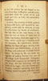 View image of 191to but the answer she yet hoped to receive from Mrs. Lessington; and she reckoned daily when the course of the post might give her, at least, this melancholy satisfaction. A mind, thus preying on itself, agitated by hopes and fears, and wearied by conjectures, could only be relieved, at last, for a few hours by books of amusement. She had sent to the only library in the place for two or three of these sort of books, but finding them only pages of inanity, which could not a moment arrest her attention, she determined, notwithstanding her fears of again meeting Lady Llancarrick and Miss Gillman, to go to the shop, and endeavour to please herself better. In doing so, she was under the necessity of passing through that part of the village most frequented. Congratulating herself, however, on not having met any body, she was returning, with her books in her hand, when her former persecutors, suddenly advancing from their lodgings, joined her, and, with their usual
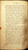 View image of 192careless ease, entered into discourse with her, asking several questions, and, when to evade these, she turned the conversation on the books she had been in search of, the elder lady delivered her opinion of several celebrated and new productions, with a fluency which astonished Rosalie, so much did it resemble a dissertation learned by heart, and remind Rosalie of Jenkinson in the Vicar of Wakefield, who, whenever he met a stranger, began with— "Sir, the cosmogony, or creation of the world," &c. &c. Rosalie, however, better content to be a hearer than a speaker, listened, or appeared to listen, with perfect resignation, internally resolving, however, to take her leave as soon as she arrived at the turning which led to her own lodgings, whether the harangeu was finished or not; she walked, in the mean time, quietly along between the two ladies, (Miss Gillman having taken her arm), and gazing on the ground, as if she was counting the pepples, when two persons hastily ap-
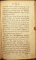 View image of 193proached, and in a voice exclaimed—"It is she!—it is my wife!——By Heaven it is herself!"——the voice was Montalbert's—Rosalie raised her eyes—it was Montalbert himself. Almost unconscious of what she did, she sprang forward, and would have thrown herself into his arms, but he retired from her, with rage and resentment in his countenance, which suddenly changing into an expression of pity, he cried—"Lovely lost creature!—art thou, indeed, lost to me?——Yes—for ever lost!—and here—too well convinced that all I have heard is true—here we part for ever!" Rosalie, who had advance towards him, heard all this with a surprise and terror that deprived her of the power of utterance. She tried, however, to say, "For mercy's sake, Montalbert, hear me!"—but seeing that he still retreated from her, and that seizing the arm of the person with him, he even walked hastily away; she made a vain attempt to quicken her pace and follow him, but her trem-
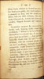 View image of 194bling limbs refused to second her will—her head grew giddy, her heart ceased for a moment to beat, and she would have fallen, had not Miss Gillman, who, with Lady Llancarrick, beheld this scene with wonder, stepped forward and supported her. In another moment she recovered her senses, and, looking wildly round her, exclaimed, "Where is he?——Where is Montalbert?——Lead me, if you have pity—lead me to him!....Let me follow him—for God's sake let me!"——Miss Gillman, with the common phrase used on such occasions, besought her to be composed; Lady Llancarrick began to reason, and to prove very logically that nobody ought to give way to such violent emotions. Her eyes, however, had followed Montalbert till he disappeared;—though when Rosalie eagerly inquired which way he went, it was a piece of intelligence she did not choose to communicate.
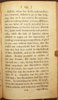 View image of 195 Rosalie, when her sense and recollection returned, desired to go to her lodging, but, as it was evident she was incapable of walking thither without assistance, the two ladies of course attended her.—Miss Gillman, in the few intervals allowed her, spoke most sentimentally and pathetically, while the lady of superior talents affected to argue on the impropriety of yielding to extravagant expressions of grief or joy—not without some hints, that she could not comprehend how the gentleman they had seen could be the husband of Mrs. Sheffield, and yet be called Montalbert. Rosalie attended to neither of her new friends; she hardly knew who was with her; but, having formed a confused conjecture that Montalbert might be at her house, her eager eyes were inquiring for him the moment she came in sight of it. Claudine met her with the little boy; but Montalbert had not been there. In beholding her child, he recalled to her startled senses the conduct of his father, with his wild behaviour and strange
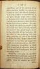 View image of 196expressions, and all the agitation of her spirits returned; but she was relieved by a flood of tears, and sobbed violently—while such comfort or remonstrance, as the ladies thought might either console or determine her to bear her distress with fortitude, were alternately administered.—Rosalie had nothing to answer. She wished, thought she could not propose it, that they would leave her as the only kindness they could do her; and at length, the one having exhausted all her sentiment, and the other all her reasoning, they went away, promising to call in the evening to see how she did. Rosalie assured them she should be very well, and begged they would not trouble themselves; she affected a momentary tranquility, to escape from a repetition of attentions, which, as they appeared to be well meant, she could not rudely refuse. When they were gone, the astonished and stunned mind of Rosalie returned to a new contemplation of the scene that had passed; when she recalled the counte-
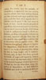 View image of 197 nance, the words, and the attitude, of Montalbert, it appeared, but too certain, that her actions had been misrepresented, and that jealousy and anger possessed him. How could she find—how appease him?—Whither was he gone?—He had come in search of her; was he then so prejudiced against her, that he would not even hear her, that he would not even see the child whom he had so passionately loved?—These reflections, pressing with painful violence on her mind, deprived her for some time of the calmness that might have enabled her to determine what [must] be done. She sometimes thought [of going] out to inquire for Montalbert, then found herself unequal to the dread of meeting him, whom she had so long sough and so tenderly beloved, only to have her heart pierced by sounds of anger and reproach, from a voice in which she had been used to listen to the fondest language of adoring love.—She had no servant who either knew the person of Montalbert, or had sufficient steadiness and sense to perform so delicate
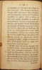 View image of 198a commission as that which she wished to have executed. The woman of the house, though older and graver than Claudine, was very ignorant, and to her it would be impossible to explain such a history as hers, and equally impossible to make her comprehend it. To her ever generous, considerate, and sensible friend, Walsingham, the thoughts of Rosalie naturally turned; but had he been still at Hastings, she could not have ventured to have asked his meditation. It was too evident, from the few incohe[rent w]ords Montalbert had uttered, that h[is col]dness and violence originated in jea[lousy,] and of whom, besides Walsingham, could he have conceived such injurious ideas? Amidst these fluctuating thoughts one occurred to her, which compelled her to take some immediate resolution. If she could see Montalbert, when she was less under the influence of surprise, she thought she could talk to him calmly, and should be able to convince him that she had never, even in idea, swerved from the faithful
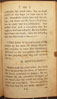 View image of 199tenderness she owed him: but to avail herself of this hope no time was to be lost. Montalbert might have left the village; and where was she then to seek him, that he might hear her justification. Impressed then with a conviction that she ought to find him instantly, she was hastening to leave the house, when the following note was delivered to her—— "THE father of the unfortunate child know by the name of Henry Montalbert, requires to have him immediately delivered to the two persons who attend for that purpose, and who will conduct him to
Rosalie read this cruel order: she stood for a moment like the statue of despair—her blood circulated no longer; she was choaked by the convulsive struggles of her heart—but she could not weep, she could not even speak. The two persons, who were sent for her child, appeared at
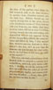 View image of 200the door of the parlour into which she had returned, and, at the same moment, by another door, Claudine entered with the little boy. Rosalie started up, and eagerly seizing him in her arms, uttered a few incoherent words—"They shall not take you from me, my child (said she); let them rather kill me at once!"—Then, turning toward the man and woman, who approached without any apparent feeling for her inexpressible distress, she cried, her voice half stifled by sobs, "For mercy's sake, whoever you are, lead me to Montalbert!—Do not, oh! as you hope for Heaven—do not execute his cruel order, but let me find him—I will carry my child to him myself!" The man, who had a countenance which seemed made on purpose to execute such a commissions, answered, with sullen coldness, "Madam, we can say nothing to all this—we must obey the order of our employer—we act legally, and cannot enter into any discussion....Come, Mrs. Jacklin, we have no time to lose."
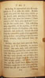 View image of 201So saying, he approached with his companion as if to take the child. Rosalie could only press her boy more closely to her breast, and, uttering a faint shriek, sunk with him upon her knees—"Have mercy!—oh! have pity on me!"——was all she could utter. The unfeeling man, regardless of her agonies, or of the tears and shrieks of Claudine, who wept, implored, and menaced, forced the child from the convulsive grasp of its apparently dying mother, and putting it into the arms of the woman, they hastened from the house. Rosalie, who had sunk upon the floor, seemed, as if by a miracle, to recover herself. She rose, and, with wild looks and swift steps, pursued the cruel wretches who had thus torn her child from her; but they were already out of sight; her streaming eyes sought them in vain; her head became giddy; her senses forsook her, and she would have fallen had not Claudine caught her in her arms, and supported her till the woman of the house
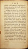 View image of 202coming to her assistance, they carried her between them into the house, insensible and apparently dead. She was now placed on her bed, and the remedies usual in such cases were administered; she opened her eyes, and, eagerly fixing them on the face of Claudine, inquired for her child. Claudine could answer only by her tears. The miserable mother then seized the hand of the woman of the house, conjuring her to go in search of him: but recollecting how little such a person could be interested, she attempted to rise herself, and again follow him. The woman refused to suffer her, and endeavoured to appease her by promises of going themselves; but her impatience became greater, and she raved, entreated, and wept, till the violence of her emotions exhausted her, and she sunk in total depression. A few moments sufficed to recover her to a sense of her misery, and then the same sad scene was renewed.
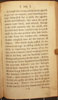 View image of 203 At length the woman of the house agreed to go out on inquiry, and something like hope suspended for a while the agonies Rosalie had suffered; but when the good woman came back, and related, though in the most cautious way she could, that the child had been carried away in a post chaise by the two persons who had fetched him from his mother—the unhappy Rosalie relapsed into all the horrors of despair. The whole night passed in incoherent ravings, in calling wildly for her child, or imploring the mercy of its father, while Claudine stood weeping on one side of the bed, and the landlady remonstrating and praying on the other. Before morning her senses seemed to have forsaken the wretched sufferer: yet her strength was so little impaired, that she again insisted on being suffered to follow her child. She directed Claudine to get her a post chaise; then attempted to rise and dress herself, till, giddy and sick, she sunk again on the bed. Thither the woman of the house had by this time summoned an apo-
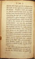 View image of 204thecary, who began gravely to inquire into the cause of the agitation in which he saw his patient. Claudine could not explain it, and the good woman knew not how, so that, from what she said, the apothecary, concluding she had lost a child by death, commenced a grave harangue on submission and acquiescence, which served only to add to the tortures of the unfortunate young woman: nor was this gentleman, who really meant well, her only tormenter. Her landlady had sent for Lady Llancarrick and Miss Gillman, who, taking each their station on the opposite sides of her bed, began to administer consolation, such as is usually doled forth in set phrases, with some difference, however, arising from character; for the lady spoke like a philosopher; "the Muse" like a sentimentalist—while Rosalie, unable to answer either, repeated to herself in the anguish of her heart—— "She talks to me who never had a son." So totally unqualified were all these parties for the delicate office of comforting
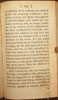 View image of 205the afflicted, or so unfit was the mind of Rosalie for receiving consolation, that, before evening, her spirits were agitated to a fearful degree; her reason was evidently wavering; and, no longer conscious of the inutility of her exclamations, she called incessantly for her child; then implored her husband to pity her; and from thence her thoughts made a sudden transition to the scenes she had passed through Sicily and at Formiscusa; till, at length, all she said appeared so innocent, and was so little understood by those who heard her, that they became convinced her senses were totally deranged, and, that these wild and incoherent appeals to persons, as well as her descriptive ravings about places, were the effects of a disordered imagination. Lady Llancarrick, who was writing for the stage, contemplated this sad spectacle with the sang froid of an amateur, who hoped to add some strong touches to her performance; while her more gentle friend with her attempts at showing sensibility,
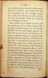 View image of 206was considering how such an incident might weave into a novel; but neither felt any true sympathy for the unhappy object, who, in the early bloom of youth, was thus the prey of anguish, which was reducing her to insanity or death. The woman of the house, however, and the apothecary of the village, began, after the third and fourth day, to be seriously alarmed for the unfortunate patient, instead of recovering her recollection, continued to fluctuate between violent ravings and fits of gloomy stupidity, while an alarming fever continually preyed upon her.—The ladies, who had at first appeared to attend her with patience and humanity, now slackened their good offices: Lady Llancarrick found that neither Walsingham nor Montalbert appeared; that she had no chance of making an interesting or profitable acquaintance by her affected humanity, and that she might, perhaps, be involved in trouble, and even in expence; to both of which, but particularly the latter, she had a decided aversion. As to
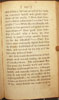 View image of 207Miss Gillman, she had no will of her own, but contented herself with gentle repetitions of the words, "Poor dear creature!—Sweet unfortunate!——alas! how pitiable!"——While she occasionally addressed to her patroness eulogiums on her benevolence—"How good your ladyship is!—oh! what a heart, my dear friend, is yours!—what amiable sympathy for the distressed!"——These sentences were continually sighed forth from the delicate sensibilities of the sentimental Muse, and received by the lady as if she had really deserved them. Ah! little could the consolations of such people avail towards healing the wounds of a broken heart. The unfortunate Rosalie every day became worse and worse. Claudine could not act for her; a stranger herself, and naturally helpless, she could only sit and weep by the bedside of her mistress; or, when she appeared to have an interval of sense, ask directions of her, which Rosalie was unable to give,
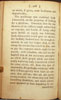 View image of 208or which, if given, were incoherent and impracticable. The apothecary now consulted Lady Llancarrick on the propriety of sending for a physician. Uncertain how far the finances of the sufferer might answer such an expence, and fearful of being called upon herself to supply any deficiency, Lady Llancarrick would give no advice; the landlady doubted how far enough remained, in case her lodger died, to discharge the arrears that would be due, and to pay the expences which might be incurred; while Claudine, who had not the smallest idea of the mercenary principles on which these people acted, was continually imploring Lady Llancarrick to send for other advice, till, from this sort of importunity, she gradually withdrew; while Miss Gillman gravely held forth an opinion, that, perhaps, after all, this pretty young creature, for whom they had been interesting themselves, and whose adventures appeared to have something so ex-
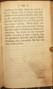 View image of 209 traordinary in them, might be merely a girl in inferior life, to whom some man of fashion had attached himself, and, finding her unworthy of any long or serious partiality, had taken his child from her for very proper reasons. While these two good ladies were thus prudently settling that they ought to decline any farther interference, the illness of the wretched Rosalie increased to such a degree, that the apothecary believed, and her female attendants were convinced, she had not many hours to live.
|
){kind=link}
){kind=link}
){kind=link}
){kind=link}
){kind=link}
){kind=link}
){kind=link}
){kind=link}
){kind=link}
){kind=link}
){kind=link}
){kind=link}
){kind=link}
){kind=link}
){kind=link}
){kind=link}
){kind=link}
){kind=link}
){kind=link}